Building a protocol using Architect
Work in progress
This article is currently being written, and is not yet complete. If you require support or assistance with this topic, please contact the project team directly.
Summary:
This tutorial will guide you through the process of creating a Network Canvas protocol using Architect. We will be rebuilding the sample protocol that is available to install within Interviewer, which was discussed extensively in the tutorial on using Interviewer. If you would like to download and open the finished protocol, you can do so from here.
Prerequisites:
This tutorial assumes you are familiar with the general concepts of the Network Canvas software, have read the project overview, and have read the tutorial on using Interviewer.
We recommend following along using your own computer, so you should also download and install Architect
Duration:
2 hoursTable of Contents
- What is Architect?
- Opening Architect
- The protocol overview screen
- Adding a stage
- Creating Name Generators
- Name Generator using Quick Add
- Quick Add with a Side Panel
- Name Generator using Forms
- Small Roster Name Generator
- Large Roster Name Generator
- Creating an Ego Form
- Creating a Per Alter Form
- Creating Sociograms
- Background Images
- Edge Creation
- Implementing the Dyad Census
- Creating an Ordinal Bin
- Creating a Categorical Bin
- Skip Logic & Network Filtering on the Categorical Bin
- Creating the Narrative Interface
- Finishing Off Your Protocol
What is Architect?
Architect is a desktop application which runs on Windows, macOS, and Linux operating systems. The purpose of Architect is to provide a simple means for researchers to build Network Canvas interview protocols, without needing extensive technical knowledge. It aims to provide a visual and intuitive user interface, so that you can focus on the content of your interviews. You don’t need to run Architect on the computer that you use to run Interviewer or Server, but you can if you wish.
Opening Architect
Upon opening Architect, you are greeted by the start screen. Like the start screen in Interviewer, you will see a welcome panel that contains links to the project overview video and the documentation website, with other sections becoming available as needed. When opened for the first time, the Architect start screen presents two task options: (1) create a blank new protocol, or (2) open an existing protocol from your computer.
In this tutorial we will be building a protocol from scratch, so we are going to start by creating a blank protocol. Click the “Create New Protocol” button within the tasks panel. Save the file with a name and location that you will be able to find later.
Network Canvas protocols are stored in a file with the extension .netcanvas. They are just like any other files on your computer, meaning you can move them around, rename them (more about this later), and you can (and should!) back them up. The .netcanvas file contains all of the data in your protocol. So if you use roster data, images, or video, these will be embedded within the file.
The protocol overview screen
Once you have created or opened a protocol, you will be taken to the protocol overview screen. This screen is designed around the vertical “timeline” metaphor also used by Interviewer. It visually represents the stages of your interview in the sequence that your participants will see them.
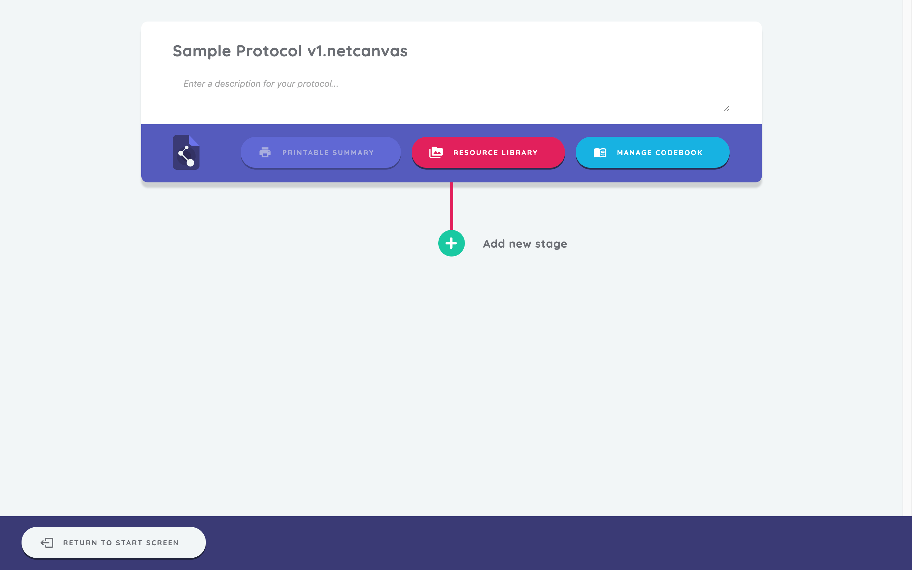
The panel at the top is the protocol card that you will see when you import this protocol into Server or Interviewer. It shows the protocol name and description, and has two buttons for accessing the protocol’s resource library and managing the codebook (these areas are discussed later). The protocol description is optional. Whatever you enter will show up in the Interviewer App on the start screen, and when browsing the list of available protocols from Server.
In the bottom left, you can see the “Return to Start Screen” button. Clicking this button will take you out of the current protocol, and back to the start screen.
Since we have just created a new protocol, we have a single button at the bottom of the screen, which enables us to add our first stage.
Adding a stage
We are going to begin by configuring an Information Interface.
Click the add new stage button. You will see a screen that provides a menu of all available Interfaces within the app. Interfaces are grouped together by type, with the example below showing all available name generators.
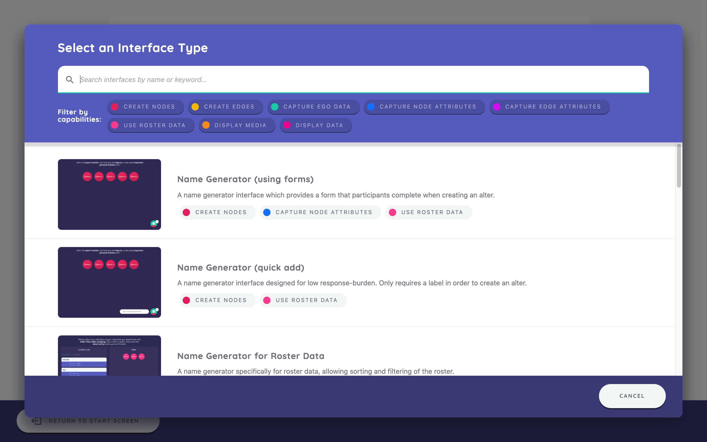
Each Interface is designed for a specific task within a network interview. For now, scroll down and select the “Information” Interface from the “Utilities” section.
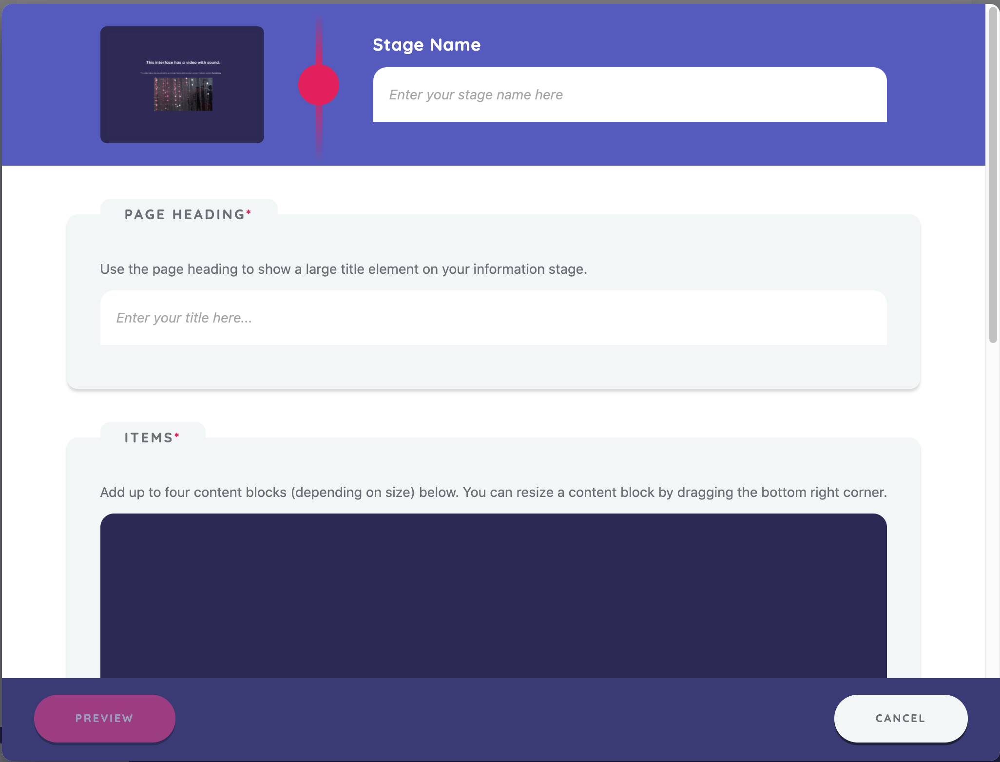
Selecting an Interface will open the stage editor, which is where the configuration of the Interface takes place.
Setting the Stage Name
All stages have a name, which is shown next to the stage icon in the timeline and lets you quickly differentiate between stages of the same type. We will call our stage “Welcome”, so enter this text under “Stage Name”. When creating your own protocols, we encourage you to use a system for naming your stages.
Page Heading
The page heading allows you to customize a large title element that will show at the top of your Information Interface. Here we will give the heading, “Welcome to the Sample Protocol.” Next, we will add the information we want displayed on the screen.
Edit Items
The Edit Items panel allows you to add various types of media you would like included on the screen. You have the option to add image, video, audio, or text content. Each resource used will be displayed in vertical blocks according to the order you add them. Content blocks can also be reordered by dragging.
To add a resource to this screen, click the ‘add new item’ button at the bottom of the panel. A new screen will open where you can choose between the media types available. Text content can be added directly in markdown. Image, audio, and video files can be added by selecting the type and browsing for the file to add, either from a location on your device or from the resource library (if you have added content there).
As in the previous Interviewer session, we will not go through the configuration of each Information Interface included in the sample protocol here. As a reminder, Information Interfaces can be used as frequently as you like throughout your protocol to help describe an upcoming task, orient a participant to a series of prompts, or present participants with a resource to consider.
Once we have added all resources that we want to include on this stage, we click the “Save and Return” button in the bottom right. This action saves our stage and returns us to the timeline view where our newly configured stage is now visible.
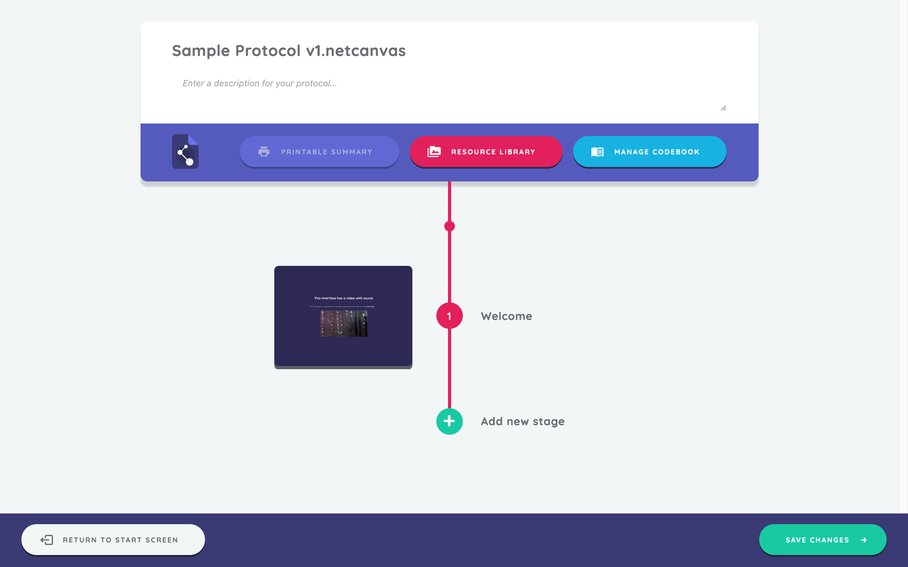
Creating Name Generators
We will now create three separate name generator stages, which appear as stages 4, 6, and 8 in the sample protocol. The first one uses a “quick add” name generator, followed by one that utilizes a “side panel”, and finally a name generator that uses forms.
Name Generator using Quick Add
First, within the timeline view, we click the add a stage button. From the interface menu, we select the “Name Generator (using quick add).” When the new stage opens, we define a stage name as we did for the previous stage.
Creating a New Node Type
Before we can continue, we must tell Architect which type of node this interface will create. Since this is our first name generator, we have no node types defined yet. Click the “Create New Node Type” button to begin the process of creating one.
Part of the ontological flexibility of the Network Canvas suite is the ability to model unlimited numbers of node and edge types. These types are top level categories that differentiate nodes and edges from one-another. Common node types might include “person”, “place”, or “organization”, but these categories are entirely up to you to decide upon.
Our name generator will ask about people, so we will name our node type “Person”. We can select a color to differentiate this node type from others, though in this case we will leave the default coral color selected.
Finally we will select the person icon to use for this node type. This icon is shown in Interviewer wherever the participant has the opportunity to create a new node of this type.
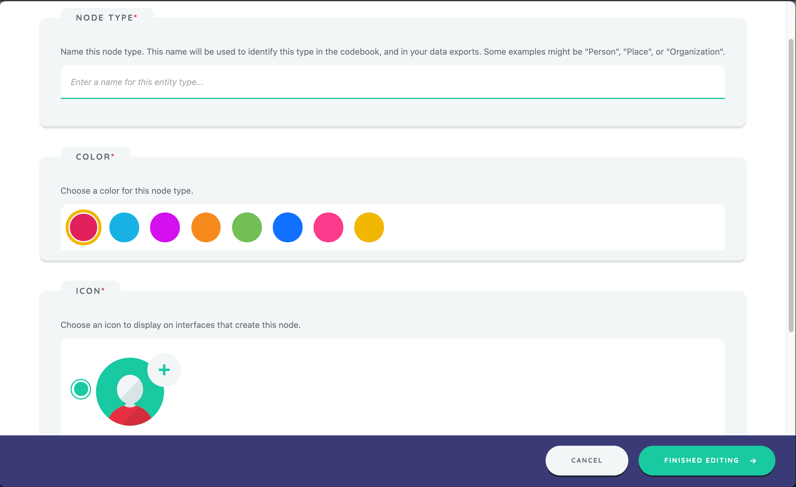
Click “Save and Return” to create the node type, and return to the name generator edit screen.
Creating a Quick Add Variable
Next, we need to create a quick add variable that will be used to store data enter for each alter nominated by the participant. Unless you have a good reason not to, this variable should be called “name”. Interviewer will use this variable as the label for every node created on this stage. To create a new variable, select the dropdown menu and click “create new” and type the name of your variable (e.g., “name”). Click the “Create” button and you will see the new variable name selected as the quick add variable.
Creating Prompts
Next we must provide some questions to prompt the participant into adding alters within the interview.
Most stages use the concept of “prompts” to allow you to define questions to put to the participant during the interview. You are free to explain the task to the participant in ways that are meaningful to your study.
You can have multiple prompts on a single stage, or a single prompt per stage - the choice is yours. You may wish to think about grouping prompts by theme, and then having one stage for each theme. For example, a “Name Generator (family)” stage could contain prompts about family alters, and “Name Generator (colleagues)” could contain prompts about professional alters.
Prompts can contain formatting such as bold or italicized text to create emphasis and rhythm. To create this formatting, use markdown syntax.
Click the “Create New” button in the prompt section, to open the new prompt edit form.
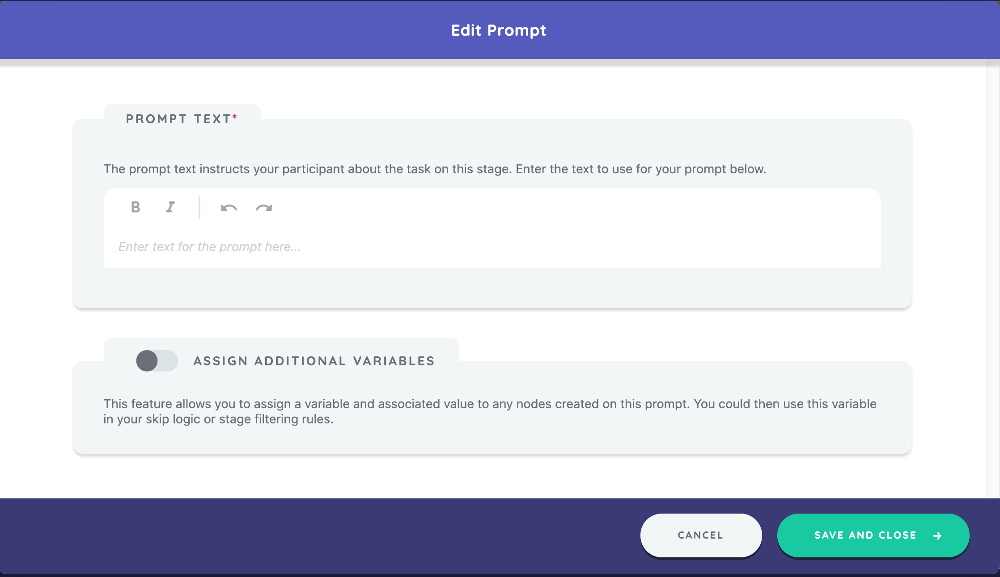
Our first prompt will ask the participant to name the people with whom they have felt close to or discussed important matters. Enter the text “Within the past 6 months, who have you felt close to, or discussed important personal matters with?”, and click “Save and Close”.
Preview Mode
We can now take the opportunity to see what our stage will look like in our finished interview by using the “Preview” feature.
Clicking it will open a window with the current stage loaded, and show the interface functioning as it will in Interviewer on a study device.
Preview mode is designed to let you understand how your stage will be presented to your participants, taking into account the device that you will be using. You can choose between different device presets, to mimic the look of a specific piece of hardware (for example you can emulate the screen size of an iPad, or a widescreen laptop).
If the window becomes too large, you can scale it so that you can fit it within your workspace.
It is important to note that although you can enter data in preview mode - for example by creating nodes - the data does not persist after you close the window!
Click the pink “Preview” button in the bottom left hand corner of the stage editor, and the preview window will open.
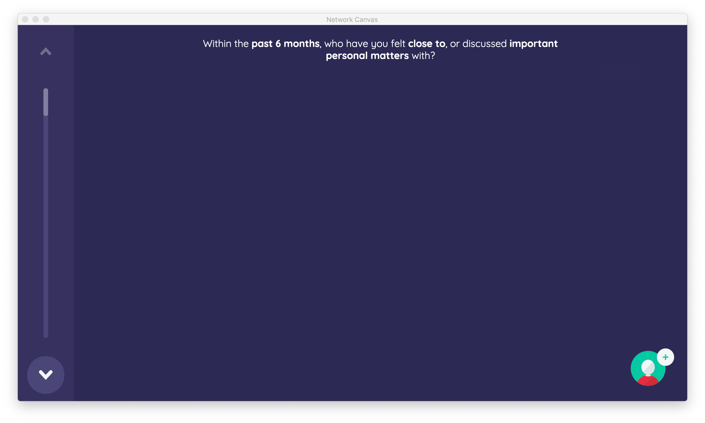
We can then click “Save and Return” on the stage editor to return to our timeline view, but now with our new stage visible.
Quick Add with a Side Panel
Next, we are going to configure another Name Generator (using quick add) interface, only this time we will include a side panel.
First, we will create a stage name, select the person node type (which we previously created), assign the quick add variable of “name”, and create a new prompt. The prompt for this stage will be, “Within the past 6 months, who have you discussed social networks research with?” .
Now, we will add the side panel. Click the “Add New Panel” and give the panel the title “People you have previously mentioned.” This title will appear across the top of the side panel and will contextualize the nodes that appear to the participant.
Next, we need to choose a data source for this side panel. We have two options: either we use the network constructed during the interview or we bring in an external data file (e.g., a roster) that will populate within the side panel. In this example, we will choose to use the network from the in-progress interview.
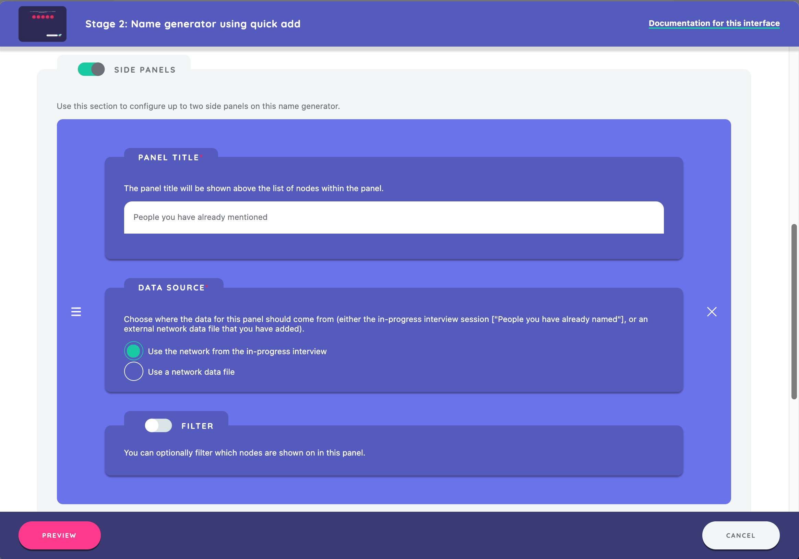
You can optionally preview the interface at this point, checking that the prompts and the form look and function as you expected. When you are satisfied, click continue to add your stage.
At any point during this tutorial, free free to click the "Save Changes" button in the bottom bar when on the timeline view, or select "File -> Save" from the menu.
Name Generator using Forms
We will now create a new name generator stage that uses a form to capture data on alters named. As before, we add a new stage (selecting the Name Generator (using forms) from the interface menu) and add a stage name. Next we will create a new node type for “Clinic” on this stage as we will be asking a prompt about clinics rather than people. Once we create the node type for Clinic, we move on to edit the form.
Form
This section is where we will define the fields that will be shown on the form when the participant creates a node on this name generator.
Fields capture data about alters or ego, and are where specific variables are defined.
First, let’s start with creating a title for the form to orient the participant to the information we want to collect. Enter the title “Add a Clinic or Health Care Provider.”
Next, we will define the fields of the form. By clicking “Create New” in the fields panel, a new screen opens which asks us to define a variable for the field, the question prompt, an input control, and to select any validation we may want to include.
For the first field, we want to know the name of the clinic the participant is nominating so we use the variable “name” that we previously created by selecting it from the drop down menu. Next, we will enter the text for this field label and in our example we will use a question prompt, “What is the name of this clinic?”

Many screens in Architect allow you to either create a new variable, or select an existing variable. If this is the case, the text next to the input will usually tell you.
When you want to create a new variable, click the box and select “Create New” from the drop down menu.
Otherwise, click an existing variable from the list in the drop down menu.
Finally, we choose the input control that will be shown to collect this variable.
Architect and Interviewer implement many different types of input control (text, number, checkbox group, toggle, radio button group, toggle button group, date picker, likert scale, visual analog scale).
This is because the most appropriate interface for assigning a variable depends very much on the specific nature of the variable, and not just on its data type. For example, when collecting an ordinal variable that represents a likert scale, you might prefer a range slider OR a group of radio buttons.
Because we are asking for the name of the clinic - a simple text variable - a text input is the most appropriate option.
Finally, we can define our validation requirements – if any – for this field. We will indicate that this text field is required. The validation options available vary depending on the type of variable. By adding a validation of required, the participant will necessarily include information in this field before they can proceed.
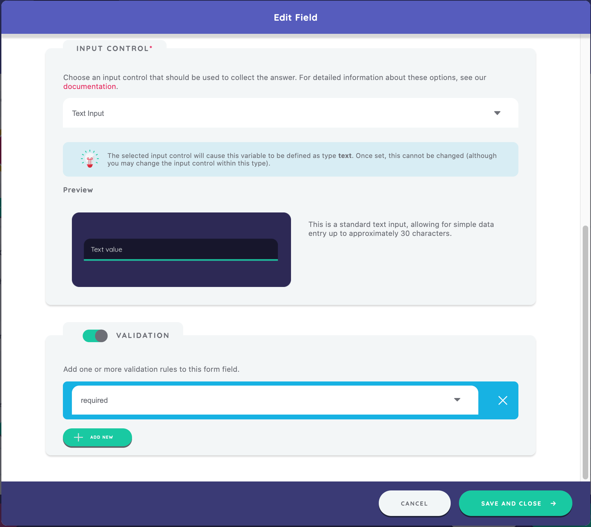
Click “Save and Close”, and we have created our first form field.
Now, using the process we learned above, we will create the two additional fields for this form.
Create the following fields, with appropriate input controls, question prompts and options:
- A
last_visitvariable, using the DatePicker input control, prompt of “When was your visit?”, and an appropriate start range - A
visit_purposevariable, using the Text Area input control, and a prompt of “In your own words, what was the purpose of your visit?”
After completing the form, we will configure the prompt for the stage. Click “Create New” in the prompts section, and enter the text, “Within the past 12 months, which clinics or healthcare providers have you visited?”
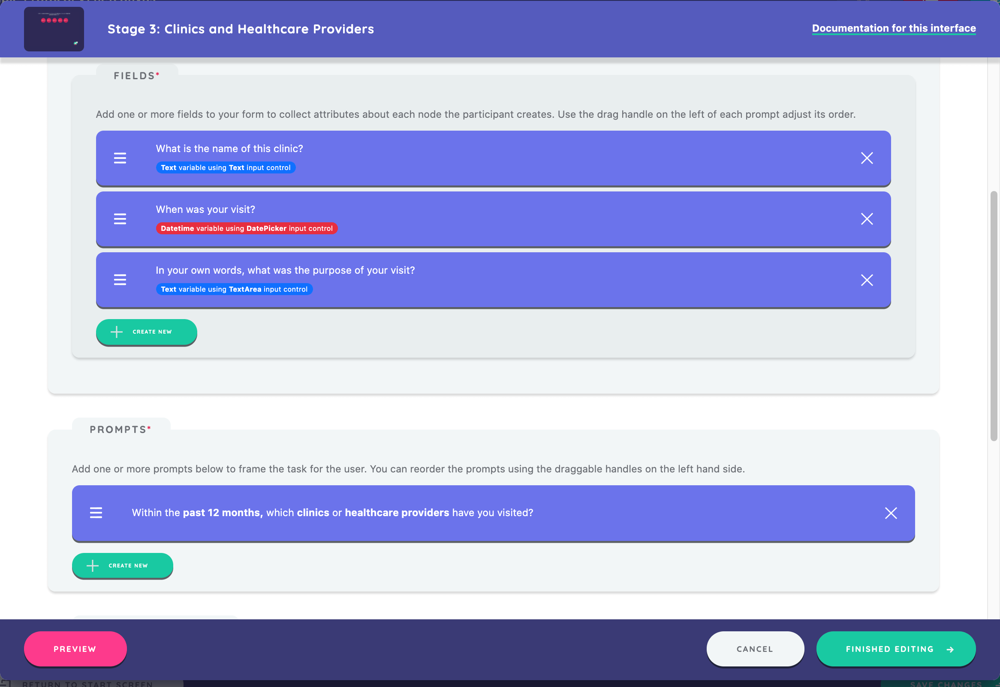
Small Roster Name Generator
Next we will develop a name generator that uses a small roster brought in as an external data file. Small rosters, by our definition, are datasets containing up to 100 nodes.
As we did in prior name generators above, we will first select the interface we want to configure (Small Roster Name Generator), add a stage name, and create a new node type for “Classmate”.
Next we will select the external data source to bring into the protocol that will populate the nodes on the roster. For this example, we have used a fictitious classroom roster. To use the same roster as the sample protocol, please click here to download our CSV file. Alternatively, use any other roster you have on hand.
Just as you added resources to the Information Interface above, you will also browse for your external data source from the protocol resource library if you saved it there or else from another location on your device.
We will then define what display properties are used to identify the nodes in the roster as they appear to the participant. First we select the variable that is defined in the external data file - in this case “first_name.” Next, we define how we want that variable to appear to the participant on the roster - in this example we enter “First Name.” We repeat the same process for the last_name variable.
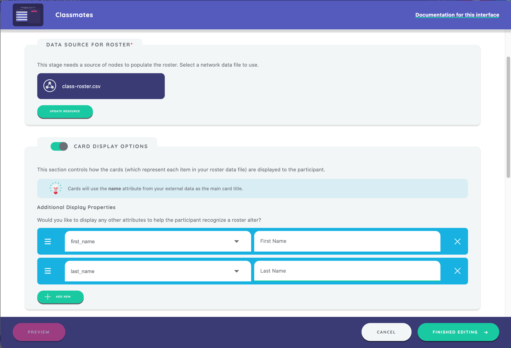
We can optionally choose to include sorting controls. Sorting controls are especially useful when a roster is large enough to make discoverability difficult at first glance. In this example, we choose to implement an initial sort order that uses the “first_name” variable to order the roster cards in an ascending order.
Refer to our Interface Documentation for more in depth instruction, including useful Do’s and Don’ts of working with roster data.
Last, we implement a prompt for the stage, following the same process we did in the previous stages. We enter the prompt that includes instructions for how to nominate a node from the roster, “Please select any members of your degree class that you spend time with other than when studying. Tap a card to select, and press the down arrow when you are finished.”
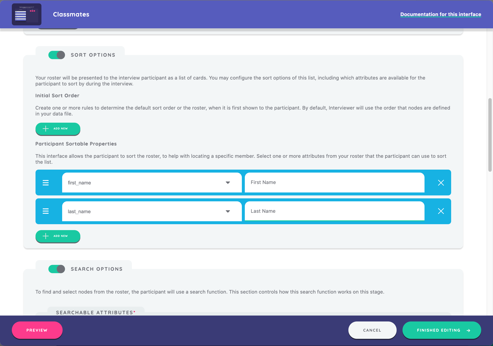
Large Roster Name Generator
By our definition, large rosters are datasets with more than 100 nodes.
Following the example from the prior stage, we will first select the interface we want to configure (Large Roster Name Generator), add a stage name, and create a new node type, this time for “University”. Again, we will pull in a data source we plan to use to populate our roster. In our example, we use a large CSV that includes universities around the world. Click here to download it.
By default, the roster cards will use the “name” attribute from your external data file as the main card title. In this example, we choose to also include “website” as an attribute to display.
Next, we will configure how the roster file is searchable to the participant. The functionality available for this interface includes the ability for participants to search the database for specific attributes in order to locate the alters they want to select.
The search options listed will depend on the variables outlined in your datafile. Here, we have the option to select “country”, “name”, and “website”, and we choose to include all three.
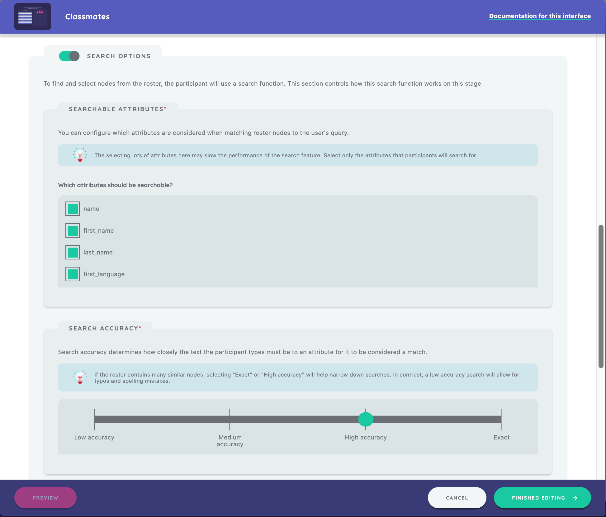
We can also narrow down the options that appear to a participant when they search on the stage by selecting “Exact” or “High Accuracy.” In this case, we select “High Accuracy.”
Finally, we add a prompt to this stage, “Which universities have you either visited or studied at?” Then, we click “Save and Return” to save the stage and navigate back to the timeline view.
Creating an Ego Form
The next stage in this sample protocol uses the Ego Form Interface. We create the Ego Form and set a stage name as we have previous interfaces.
Introduction Panel
The introduction panel is a feature of the Ego Form Interface that lets you introduce the form to the participant. You might use it to explain which data you are asking for, and why. In our case, we explain the intended use of the Ego Form Interface.
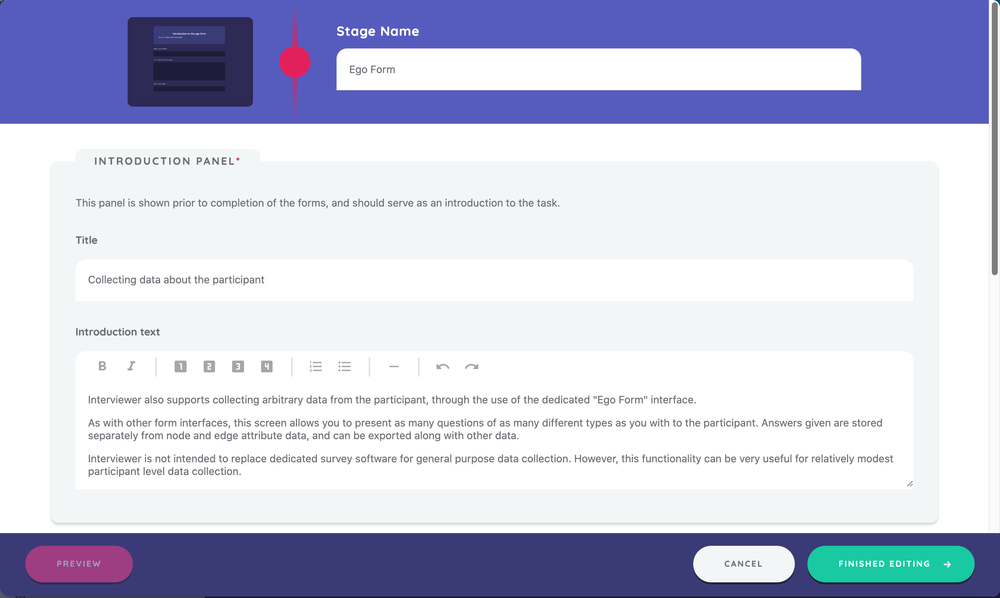
Now, let’s create a series of fields for our ego form just as we did while configuring the Name Generator using forms. If you don’t remember how we did this, please review above.
Next, we will create the following fields with associated variables, question prompts, input controls, validations (if used):
- first_name, “What is your first name?”, Text Area, Required validation
- last_name, “What is your last name?”, Text Area, Required validation
- dob, “What is your date of birth?”, DatePicker with end range 2002/January/1
- languages_spoken, “Which of the following languages do you speak fluently?”, Toggle Button Group with options English, Mandarin Chinese, Hindi, Spanish, French, Arabic, Bengali, and Russian
- existing_software, “Overall, how satisfied are you with existing social network analysis software?”, Radio Group with options Very Satisfied, Somewhat Satisfied, Neither Satisfied nor Dissatisfied, Somewhat Dissatisfied, and Very Dissatisfied
- research_support, “How satisfied are you with the level of support you receive?”, Likert Scale with Very Satisfied, Somewhat Satisfied, Neither Satisfied nor Dissatisfied, Somewhat Dissatisfied, and Very Dissatisfied
- operation_pain, “Thinking back to your last medical procedure, how much pain do you feel you experienced?”, Visual Analog Scale with min and max labels as No Pain and Unbearable Pain
- prefered_contact_method, “How would you prefer to be contacted about your next interview?”, Checkbox Group with options Email, Post, SMS, and Phone Call
- other_info, “Is there any other information you would like to provide at this time?”, Text Area
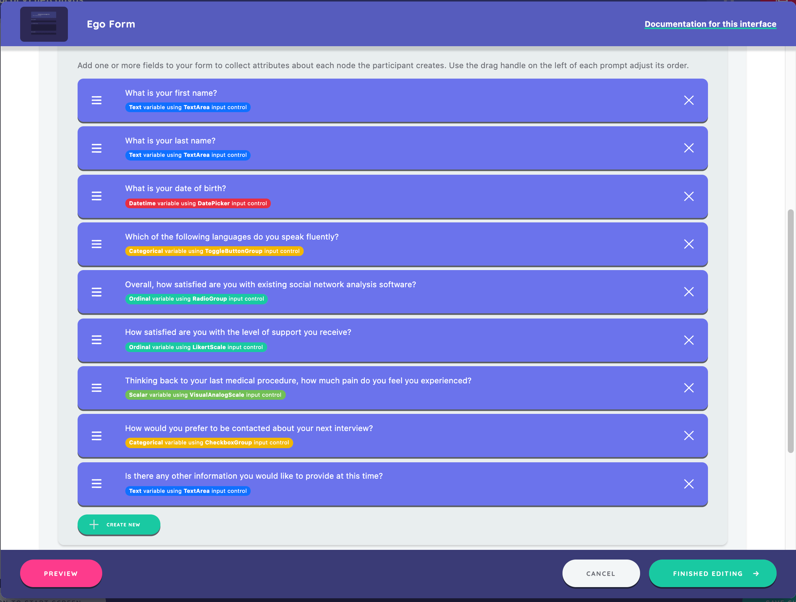
To demonstrate the range of input control options, we implemented far more fields than are likely to be best practice for a form within an interview. You can learn more about input controls here
We click “Save and Return” and go back to the timeline view to implement the next stage.
Creating a Per Alter Form
Let’s next repeat that process, but this time creating a form that will capture data from alters on the Per Alter Form Interface. Create a new stage using the Per Alter Form Interface and set the stage name. Next, select the node type “University” and scroll down to configure the Information Panel.
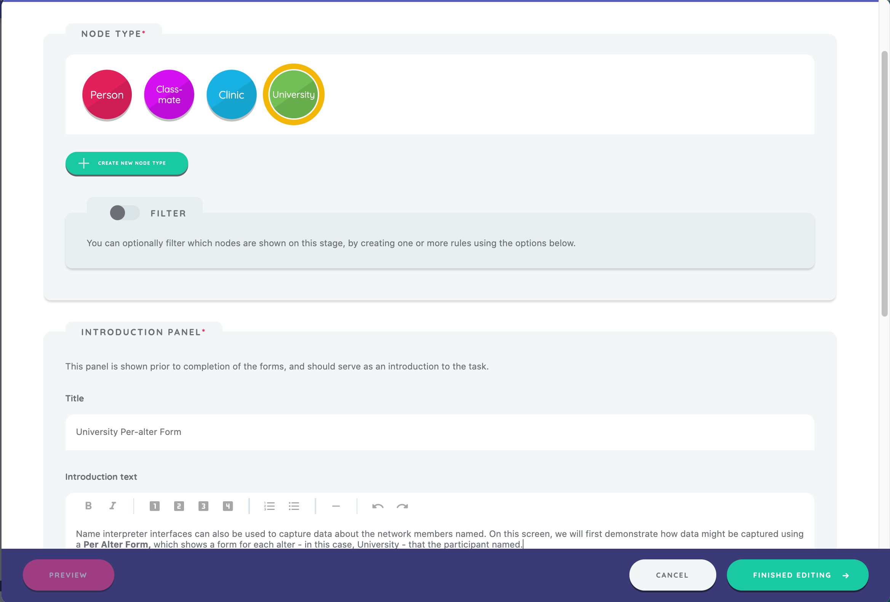
We will now add just two fields to this form. Here are the details you need, following the same process as above:
- Variable called
visit_or_study, prompt of “Did you visit this university, or study there?”, input control of “Radio Group” with options “Visited” and “Studied”, “Required” validation - Variable called
overall_review, prompt of “Overall, how would you describe your experience at this university?”, input control of “Likert Scale” with options “Excellent”, “Above Average”, “Average”, “Below Average”, “Poor”
As before, save when you are finished, and return to the overview screen of your protocol.
Creating Sociograms
For the next stage, we use the Sociogram Interface. The Sociogram is an interface designed to allow participants to interact with the alters produced within Name Generator stages in three principle ways.
- Layout, where the participant spatially arranges the nodes
- Edge creation, where the participant can create alter-alter ties
- Variable toggling, where the participant can nominate alters has having a given boolean attribute
Create the stage, set a stage name, and select the “Person” node type.
Node Positioning
Next we need to choose a background image for the Sociogram. We can decide between using a default concentric circles background or adding our own image file from the resource library or from another location on our device. For this first example, we will choose the default option and specify that we want 3 circles skewed so that the middle is proportionally larger.
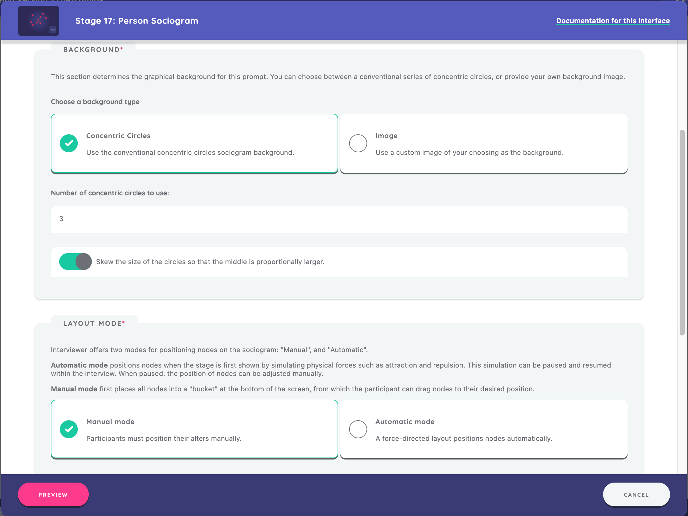
We will add a prompt for the stage that reads, “Please position the people you have named amongst the concentric circles. Place people who know each other together, and put people you are closer to towards the center of the circles.”
You will see that when creating a prompt on the Sociogram, you have the option of defining a layout variable.
The layout variable will be used to store the X/Y coordinates of the nodes when the participant positions them on the screen. If you have multiple prompts on your Sociogram, you may wish to use the same variable layout for each (which will keep the nodes positioned as they originally are by the participant) or you may wish to create a new layout variable for each prompt (which would require the participant to reposition the nodes each time). In this example, we will create a “sociogram_layout” variable for this stage.
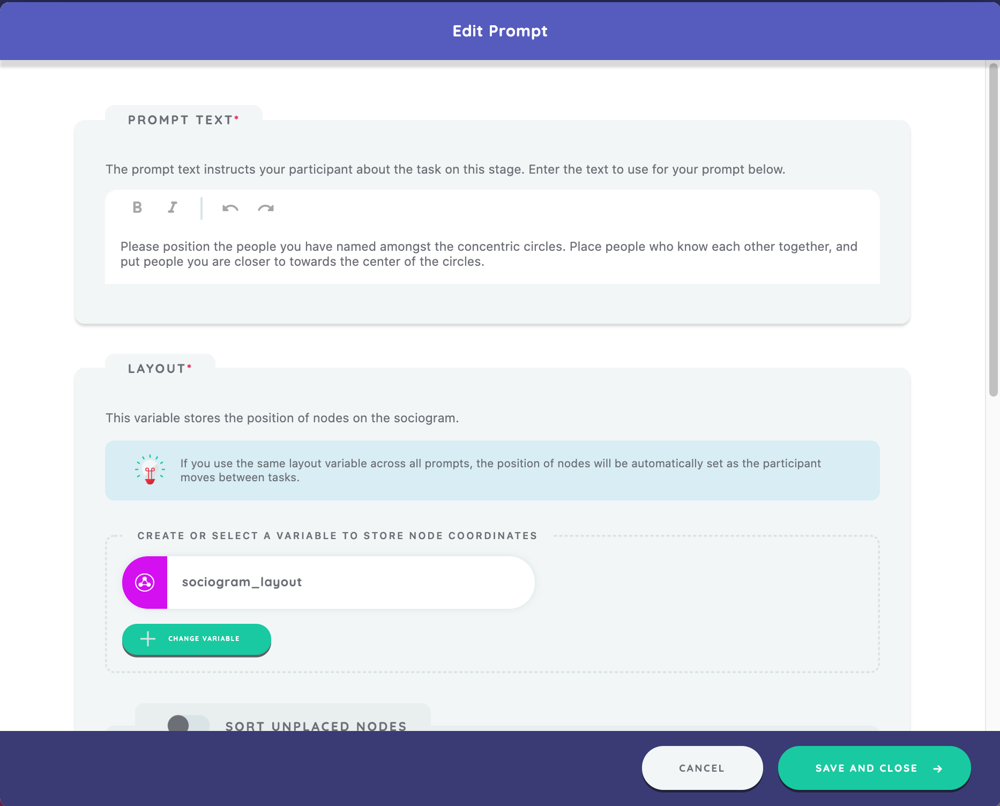
We finish by clicking “Save and Close” to close the prompt editor, then “Save and Return” to save the stage.
Background Images
Now we’ll configure another Sociogram, but this time we’ll bring in an image asset to serve as the background. Follow all the previous steps, but now choose an image as the background type instead of using the concentric circles. If you have an image file saved to your resource library you can browse for it, otherwise you can add an image file saved elsewhere on your device. In this case, we designed a quadrant image where we will ask the participant to drag their alters based on the context of the relationship.
You should think carefully about how the choices you make regarding the background will impact the way your participants position their nodes.
As before, we will enter a prompt and not assign a task for the stage. The prompt text is, “Please position the people you have named in the boxes according to which group you feel they most belong to.” We save the stage and move on to the next.
Edge Creation
We will create another Sociogram stage to experiment with creating edges. For this stage we’ll use node type “Person” and the concentric circles background with 3 circles skewed.
We create our first prompt, “Please connect any two people who might spend time together without you being there” and we use the sociogram_layout variable we already created.
Now we will enable edge creation on a Sociogram prompt, by toggling the switch “create edges by tapping on a node” option, in the “Edge Display and Creation” section.
The sociogram is the primary location within the interview where edges are created. A sociogram prompt can only create a single edge type at a time, but note that it can display several.
In the scenario where multiple edge types are selected for display, creating a new edge that would cover an existing one works simply - the existing edge is visually replaced with the new edge type. Both edges are still stored in the interview network. Removing this new edge will revert the visual display to the previously visible edge type (only one edge type can be created or removed on a prompt).
You may consider using this feature to progressively build up a network, by allowing the participant to use the visual “scaffolding” of existing edges to quickly identify where to create new ones.
In the next box, we will either create a new edge type or select an existing one. Since we have not yet created any edge types, we will create a new type called “know” to correspond with the prompt.
We click “Save and Close” to return to the Sociogram editor.
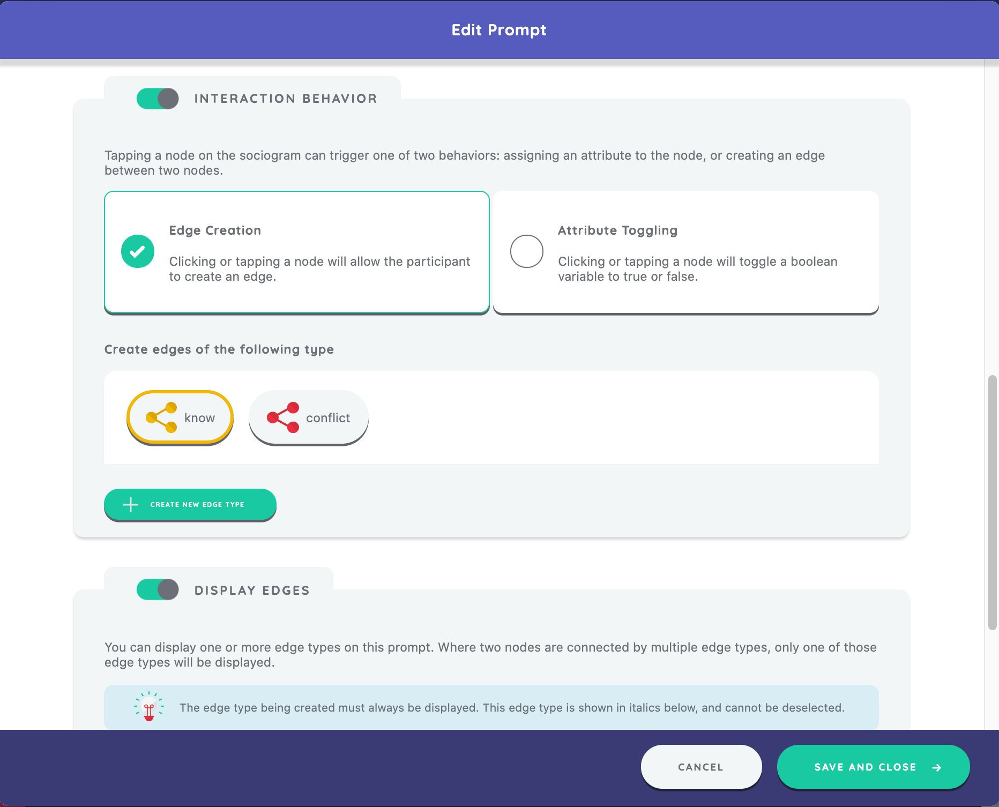
Next, we add another prompt, “Please connect any two people who have conflict, or who don’t get on well with each other” and use the same sociogram_layout variable.
We also choose edge creation as the task for the stage, but create a new edge type of “conflict” as we will now be capturing alter-alter ties that are conflictual.
Implementing the Dyad Census
By now you should have a feel for the process of configuring a stage within Architect. We will continue by adding a Dyad Census Interface stage to our interview, which builds on many of the concepts we have already covered.
From the timeline overview, click the “Add New Stage” button, and select the Dyad Census interface. Again, we name the stage and this time we select node type “Classmates.”
We will next implement skip logic so that the stage will only show for participants who nominate at least two classmates on the small roster name generator implemented previously. We do this by toggling the switch to enable skip logic for the stage, selecting “Skip this stage if”, and, then, defining an alter rule by clicking the “Add Alter Rule” button to define the equation.
We define the rule by selecting the alter node type of “Classmate”, then selecting rule type of “Presence”, and, finally, selecting “Does not Exist.”
As on other name interpreter interfaces, we will also configure the Introduction Panel and define a prompt. For this stage, we enter the prompt, “To the best of your knowledge, do these two people spend time together outside of class?” We previously created two edge types on the sociogram which appear available for our use on this prompt. We will select the “know” edge type since we are asking the participant whether any two classmates know one another.
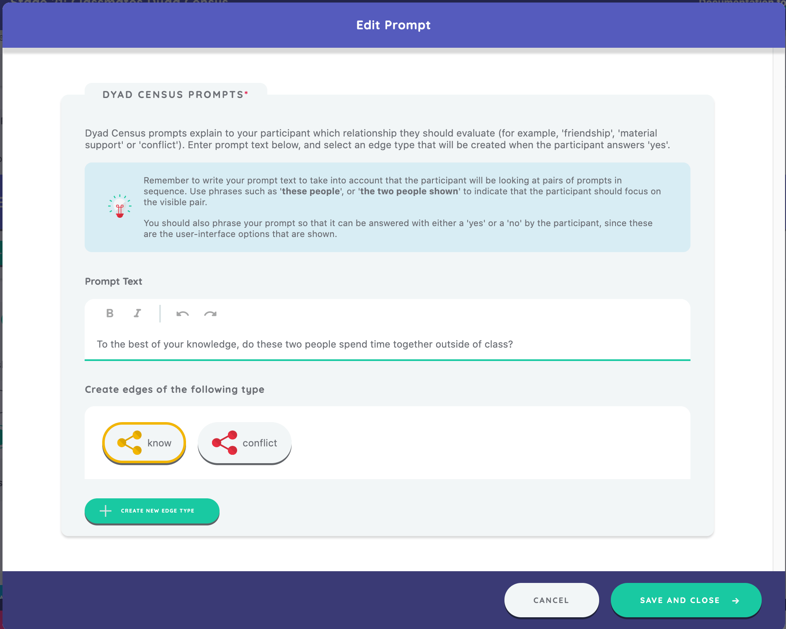
Toggling a Variable
In our final Sociogram stage in this protocol, we will implement variable toggling - or the action that allows a participant to toggle a boolean variable to “true” or “false” by tapping a note.
Once again, we create the stage, set the stage name, select the “Person” node type, and use the concentric circle background with 3 circles skewed.
Next, we create a new prompt, with the text, “Please select anyone who you have asked for advice within the previous 6 months”. Re-use the layout variable (“sociogram_layout”) we created previously.
We do not want to enable edge creation on this prompt, as it would disable the variable toggling function (the two modes are mutually exclusive). However, we can still display edges in order to help the participant locate nodes.
To do this, select “Know” and “Conflict” under “Display edges of the following type(s)”.
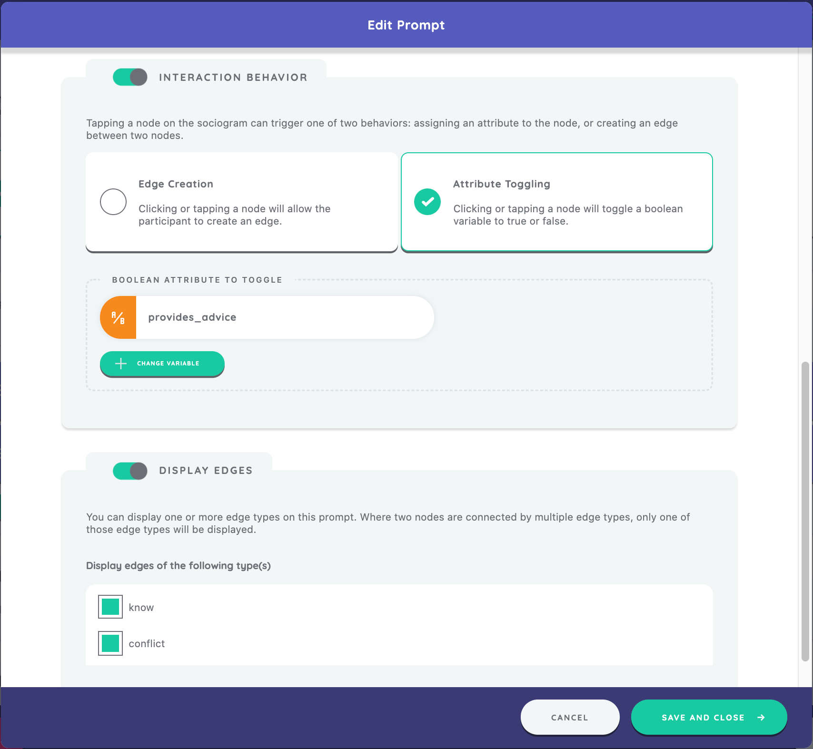
Configuring the sociogram prompt to enable variable toggling involves two steps: (1) toggle “Enable variable toggling by tapping a node” to the “on” position, and (2) create (or select) a boolean variable to be assigned in the box that appears below.
In this case of this prompt, using the techniques we have already covered, create a variable called “provides_advice” and press “Save and Close”.
We will now complete the exact same steps for the second prompt, which reads, “Please select anyone who has supported you financially within the previous 6 months.” This time, we will create a boolean variable of “provides_material_support.”
We have now finished configuring this sociogram stage.
When previewing a stage using an interface type that does not create nodes, you may notice that no nodes are available to test the stage’s functionality.
To address this, the preview mode allows you to create nodes from any earlier stages in your interview that are capable of this (primarily name generators or roster interfaces).
Simply navigate to a stage that creates nodes from within preview mode, create some nodes suitable for your sociogram stage, and then navigate to the sociogram stage - your nodes will appear, and you will be able to test edge creation, variable toggling, and positioning.
Creating an Ordinal Bin
We now wish to create an Ordinal Bin interface so that we can quickly and efficiently ask our participant about the frequency of contact they have with each alter. From the timeline overview, add a new stage using the Ordinal Bin interface.
By convention, the Network Canvas software uses two terms for the containers that nodes are dragged between on the Ordinal Bin, Categorical Bin, and Sociogram interfaces.
Buckets are where nodes are found initially, before they have been placed, or dragged. Bins are where nodes are placed are dragged to. This is where nodes end up.
Both bins and buckets can have the sort order of the nodes within them defined. You can use this to (for example) make the bucket show nodes with a certain attribute, such as closeness, first. This may help with a task such as positioning nodes on a sociogram.
As with previous interfaces, begin with naming the stage (“Contact Frequency”), and selecting our node type (“Person”).
Most of the configuration for this interface happens within the prompt. Create a new prompt, and enter the text, “When was the last time that you communicated with each of the people you named?”.
Next, we need to create an ordinal variable. This is fundamentally the same process that we carried out when configuring the language variable in our ego form. Every time we create an ordinal or categorical variable within Architect, we will enter a label and a value. The value is what will be stored in our dataset. Both text and numerical values are allowed. Complete the labels and values as in the screenshot below.
Create a variable named “communication_freq” with the following possible options:
| Label | Value |
| Last 24 hours | 5 |
| Last week | 4 |
| Last six months | 3 |
| Last two years | 2 |
| Over two years ago | -1 |
In the case of our prompt, we will use the default node bin and bucket sort options. Click “Save and Close” to finish editing this prompt, and then click “Save and Return” to return to the timeline view.
Creating a Categorical Bin
You should now be able to create a categorical bin interface using everything that you have learned so far. Add a new stage using the Categorical Bin interface, with the following characteristics:
- Named “Categorical Group Membership”, and operating on the “People” node type.
- Using a categorical variable called “group” with the following options:
- Family Member
- Friends
- Work Colleague
- School
- With the prompt text, “Which of these options best describes how you know this person?”
- Toggle “on” the Follow-up “Other” option with bin label “other”, question prompt “Which context best describes how you know this person?”, and variable “group_other”
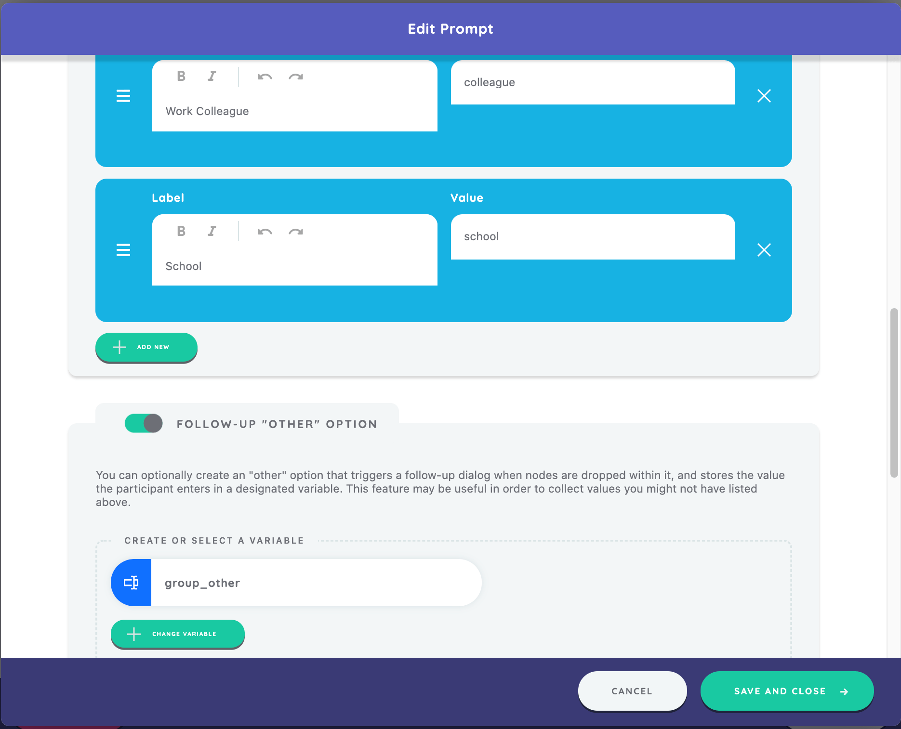 As before, we will “Save and Close” and “Save and Return” to complete and save our edits on the stage.
Skip Logic & Network Filtering on the Categorical Bin
Next we will implement another Categorical Bin Interface. This time, we will create the stage as before, set the stage name to “Relationship Type” and select node type as “Person.”
Now we will configure both the network filtering on the stage as well as the skip logic for the stage. First, toggle the “Enable network filtering for this stage” to “on” and press the “Add Alter Rule” button. Next we will configure the rule according to the following: node type “Person”, rule type “Attribute”, variable query “discuss_network_research”, operator “exactly”, and attribute value of “True.”
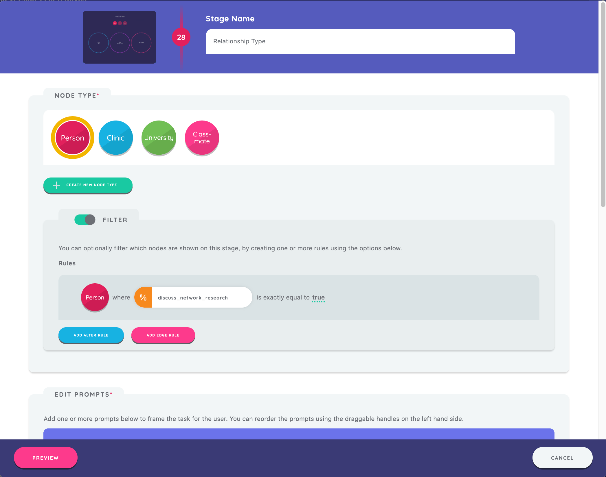
Click the “Finish and Close” button.
To enable skip logic, we toggle the “Enable skip logic for this stage” switch to “on.” Then we click the “Add Alter Rule” again. First, we configure the skip logic rule according to the following: node type “Person”, rule type “Presence”, and operator “Exists.” Next, we configure a second skip logic rule as follows: node type “Person”, rule type “Attribute”, variable query “discuss_network_research”, operator “is exactly”, and attribute value of “True.”.
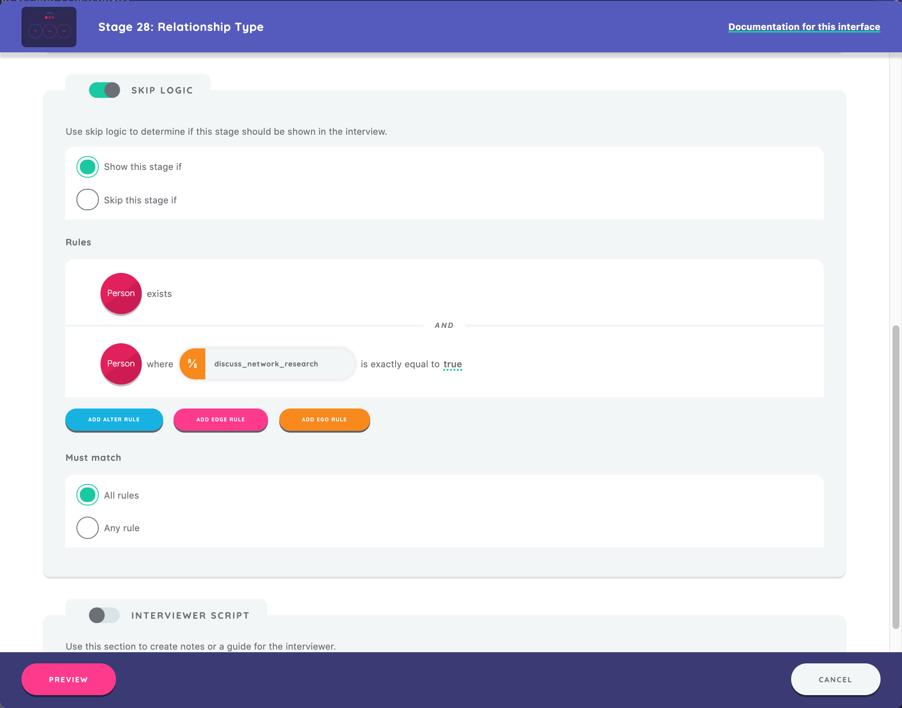
Once configured, ensure the “must match” setting is “all rules”, as above.
As a final step on this stage, we will create a prompt with the text, “You indicated that you’ve discussed social networks research with these people. Which category best describes your relationship with each person?” We will assign a categorical variable of “social_networks_research_relationship” with the following labels: Work Colleague, Classmate, Co-author, Supervisor. Type the corresponding values of “Work_Colleague”, “Classmate”, “Co-author”, and “Supervisor.”
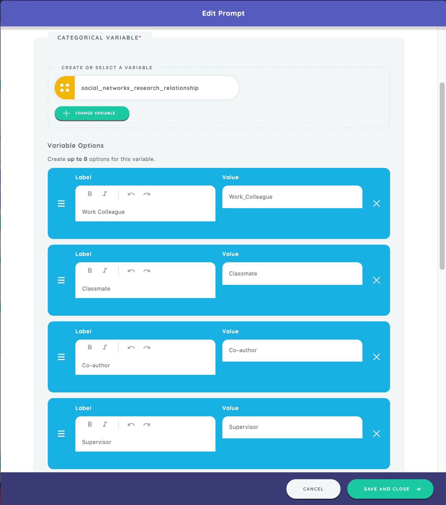
We will also include a “Follow-up “Other” Option” for this prompt. Toggle the switch in the section to “on”, type the label for bin of “Other”, type question prompt for dialog as “What is your relationship with this person?” and create a new variable to capture this attribute of “social_network_research_relationship_other.”
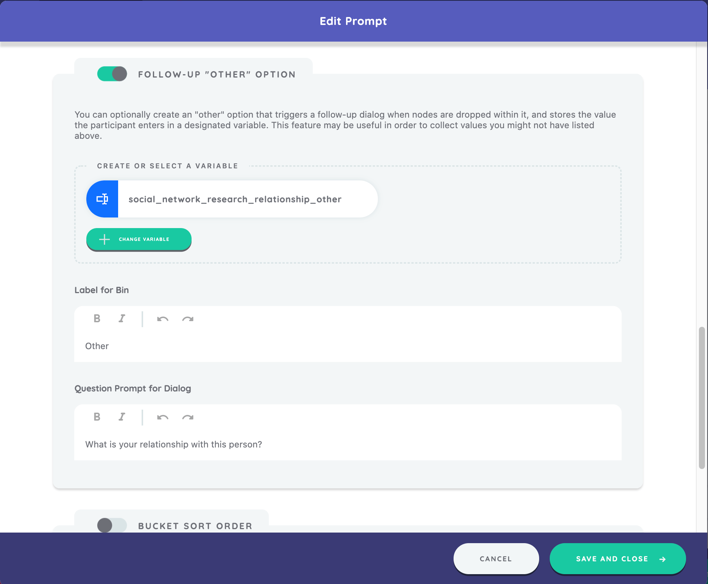
We have now finished configuring this stage. Press “Save and Close” on the bottom right of the prompt editor, and “Return and Close” on the Categorical Bin Interface editor.
Creating the Narrative Interface
The last stage configured in this sample protocol is the Narrative Interface. As you have already learned, we will create a new stage (Narrative Interface), set a stage name (“Narrative Interface”), and select a node type (“Person”). Next we will choose to use the concentric circles background, but this time elect to use just 1 circle.
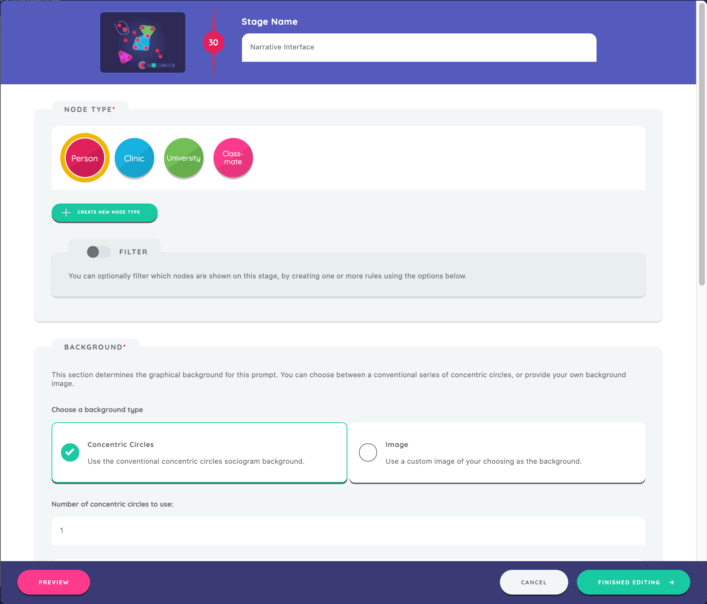
Configuring Presets
Narrative presets allow you to emphasize specific elements of a participant’s network visually, such as nodes grouped by attribute characteristic or alter-alter relationships (edges). Once the presets are configured on this screen, they appear as a menu where each option can be toggled “on” or “off.”
Now, let’s configure presets for our sample interview protocol. Go to the section in the Narrative stage editor titled “Narrative Presets” and press the “Create New” button. We will give the preset a label of “Sample Preset.” This label will appear at the top of the menu visible to the participant on this stage.
Next, we will click the “Layout Variable” box. We can choose to either create a new layout variable for this screen or use an existing one. In this case, we’ll use the “sociogram_layout” variable we created before.
If we have collected data on a categorical variable and the participant has assigned that attribute to at least two nodes, we can visualize this grouping on the Narrative Interface. The drop down menu under “Group variable” will show all available categorical variables in our protocol. In this example, we choose the variable “group.”
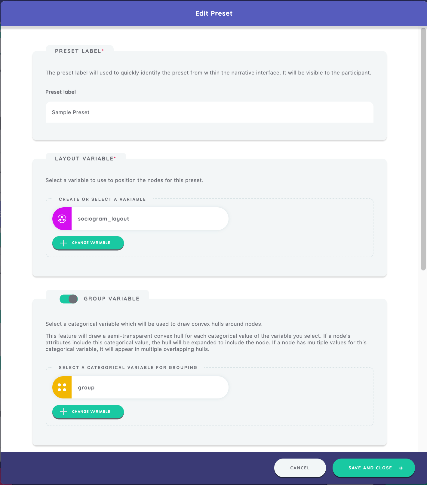
Under “Edge types to display”, we will see all edge types defined within our protocol. We will select the checkbox next to the edges we want to display (“know” and “conflict”).
The last step in the preset editor is to select any boolean variables we want to highlight on the participant’s network. Again, all available boolean variables will appear in this section and we can choose which of these we want included in the preset. We will select the checkboxes next to both “provides_advice” and “provides_material_support.” To save our work, we click “Save and Close.”
Back on our Narrative Interface edit screen, we can see the sample preset we just created. We will move below to the “Narrative Behaviors” section, and toggle both “Free-draw” and “Allow repositioning” to “on.” (The latter should already be toggled on by default).
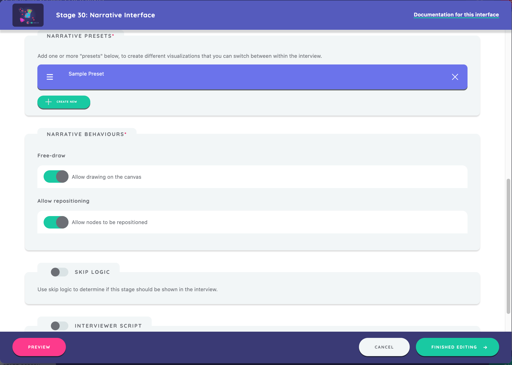
Free-draw is a function on this interface that allows a participant to annotate on the screen by using their mouse. They can draw lines, symbols, or words that help them describe aspects of their network.
Repositioning on the Narrative Interface enables a participant to drag their alters to new positions, keeping the displayed edges intact.
Click “Save and Return” and are now able to view the configured Narrative stage on our timeline.
Finishing Off Your Protocol
Make sure to save your file. The file name of the protocol will uniquely identify it in both the Network Canvas Interviewer app and Network Canvas Server.
There are numerous ways to transition from building the protocol within the Architect to deployment.
- Within the Interviewer app, import the protocol file directly from a file location on your local computer.
- Host the protocol file on a web server and then within the Interviewer app, import the protocol file from a web URL.
- Use Server to manage the workflow. Once the protocol is loaded into Server it can be deployed to multiple field devices and then receive data from these devices for collation and export.
In the next tutorial, Server and Interviewer Workflows, we will show you how to use Server to load a protocol file onto multiple devices and then receive the data from those devices.